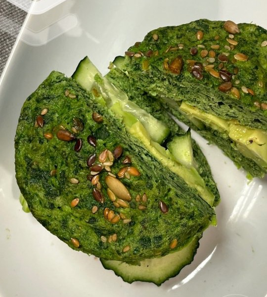

1/5
Recetas Glucovibes
Pan de atún
en 10 minutos
Proteico, sin harinas y al microondas.
Desliza →
Hacemos
visible
lo invisible
2/5
Así
queda

Hacemos
visible
lo invisible
3/5
Solo
necesitas
🐟
Atún escurrido
Tu base de proteína.
🥬
Un puñado de espinacas
Fibra y color.
🥚
2 huevos
Para que cuaje.
🧂
Ajo en polvo y sal
Al gusto.
Hacemos
visible
lo invisible
4/5
Paso
a paso
1️⃣
Tritura
Todo en la batidora.
2️⃣
Al molde
Con un chorrito de aceite y semillas por encima (chía, sésamo).
3️⃣
Microondas
3-4 minutos, hasta que cuaje.
4️⃣
Rellena
Nosotros: pepino y aguacate.
Hacemos
visible
lo invisible
Comida rápida
que no dispara tu glucosa.
Más recetas en la app
glucovibes.com
Hacemos
visible
lo invisible